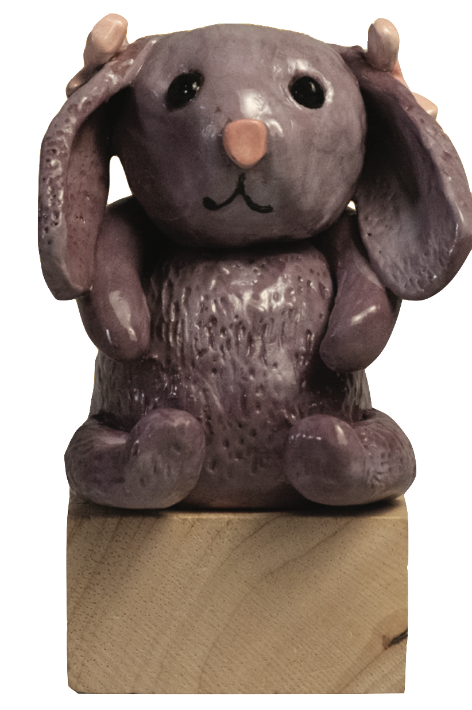

Student Staff
Editor-in-Chief: Abigail Chung
Art Director: Serena Xu
Copy Editor: Madeline Chu
Photography Editor: Ava Wu
The plight of teenage life is hardly undocumented.
Welcome to the 2025 edition of Briars & Ivy, this year’s ever-elusive pursuit of artistic perfection.
Among weeks of AP exams, finals, and preparations for end-of-year celebrations, this book has slowly
been gaining the strength to lift off the runway and land before you. Thankfully, our laptops and brain
cells didn’t crash and burn during the process. Not too hard, at least.
As we approach our last days of high school, only to turn and start afresh in college, the
questions begin. What exactly is perfection? How do we recognize “enough”? Emerging from
childhood and into the big, wide, adult world, everything feels foreign and daunting. When life seems
so turbulent, we often find ourselves retracing our steps. The threshold between maturity and youth is
messy and obscure. It’s when we tow this line that we search for answers–often through expression.
and inspiration to flourish.
Any younger sibling could tell you that
early on, being a “teen” denotes groans, complaints, and seemingly endless eye-rolls. Yet, Vol. LXIII
delves deeper. Having just turned 18 (and grown a wisdom tooth!) we can personally disclose that
adolescence is, above all else, confusing. Figuring yourself out isn’t so easy when you don’t look, act, or
even feel like the person you’ve always been. It’s only natural to fear a reality where everything seems
wrong, to covet a fantasy in which the right choice exists and you know how to make it.
Briars & Ivy hopes that the following pages will inspire you to look a little closer at life’s
confusions–and perhaps, find some clarity along the way.
Abigail Chung, Serena Xu
Editor-in-Chief and Art Director
____
Audiovisual Media
Access QR Code content from this volume on the site
Mission Unfailable - Jacob Janowitz, Marc Katz, Oliver McGrath, and Andrew Milowitz
Green New Deals - Zoe Amsterdam
Lost In Sound - Ellie Ahmed
Student Contributors

Knuffle - Kaylin Wong
Briars and Ivy is an award-winning, student-run publication, dependent on our staff members and the overall Briarcliff High School Community to showcase the artistic and literary culture of our generation. This year, we thank the following 40 individuals for their contributions to Volume LXIII in 2025.
Ellie Ahmed
A senior who enjoys composing music and coding.
Lily Ahmed
A sophomore who loves painting and writing.
Alicia Almonte
A freshman with passion for trying and learning new things. She also loves spending time with friends and family.
Samantha Anisman
A senior who loves painting. She will be attending the Chicago Institute of the Arts and enjoys cold drinks.
Michael Aptacy
A junior who likes hanging out with his friends.
Michayla Benuscak
A senior who enjoys art and spending time with friends.
Maya Chrzanowski
A freshman who loves animals and music. In her spare time, she figure skates and plays piano.
Meena Chrzanowski
A senior who enjoys painting, particularly watercolor, and dancing. She also has a passion for veterinary medicine.
Meera Chrzanowski
A senior who will be attending Tufts University in the fall. She hopes to minor in fine arts and continue working with oils.
Madeline Cohen
A junior who loves cooking, baking, her friends, her dogs, and her sister. She is also on the varsity softball team. GO LADYBEARS!!!
Danny Dempsey
A freshman finishing up his year at BHS, and at any given moment, you can probably see him watching NASCAR or car videos. He also loves volleyball, art, and photography, and is excited to pursue more of these interests in future years.
Miranda Dempsey
A high school freshman who loves theater, cross country, and painting. She enjoys writing as a hobby in her free time.
Caidon Dillon
A senior working with art through ceramics and enjoys playing video games.
Jade Fuller
A freshman who loves to dance.
Luke Fuller
A senior who enjoys robotics and photography.
Harrison Gluck
A senior who partakes in Briarcliff ’s ceramics classes as well as playing on the high school’s basketball team.
Jacob Janowitz
A freshman following his love for art both in and outside of school. Aside from film classes within the high school, Jacob pursues his talent through music production and film critique.
Marc Katz
A freshman with a talent for both films and sports, having worked in film through Briarcliff High School’s film department and participating in both competitive swimming and track.
Georgia Kluger
A junior who is a big Billie Eilish fan.
Robert Leggio
A sophomore who likes to play football, basketball, and golf in his free time. But his favorite thing to do when he is not focusing on his studies is enjoying quality time with family and friends.
Julia Maad
A sophomore who loves editing and Jenna Ortega.
Elia Martins
A sophomore who loves spending time with her friends.
Oliver McGrath
A sophomore with experience in art, particularly photography. Outside of classes, Oliver also plays lacrosse.
Avery McLear
A senior who enjoys hanging out and being creative.
Jordan Melnick
A seventeen-year-old junior at BHS who possesses a deep passion for both dance and painting, and values spending quality time with friends and family.
Kevin Miller
A freshman and artist, expressing his talent through print alongside other mediums.
Andrew Milowitz
A sophomore who enjoys making movies and acting in dramas and musicals. When he is not in school or on stage, he spends his time on the race track racing go karts professionally all around the state.
Nika Moini
A sophomore who is passionate about songwriting, and plays the guitar, piano, flute, and sings.
Hannah Nirenberg
A freshman who has a passion for doing art. She loves all types of art, but her favorite mediums include colored pencils and charcoal.
Nina Nowakiwskyj
A senior who enjoys track and is known to engage in gluttony (from time to time).
Emely Olivo
A senior with a creative mindset with hopes to fulfill her aspirations of art.
Celeste Rodriguez
A sophomore who likes Tiktok.
Phoebe Rubin
A senior who would describe herself as an artist, music connoisseur, and Fantastic Mr. Fox nerd. She is so excited to be participating in NAHS this year and being taught by the lovely, wise, Ms. Smith.
Matt Seim
A senior who is passionate about hockey, art, and other activities.
Gred Skendo
A freshman who loves drawing, painting, and math. During their free time, they enjoy video games and cycling.
Conall Torres
A junior who never likes to take things too seriously. When he’s not reading, joking with his friends and teachers, or playing sports, he’s probably bored—and wishing he were.
Sydney Weiss
A sophomore who enjoys playing sports and being with her dog. When she is not with her friends, she is spending time with her family.
Kaylin Wong
A sophomore that enjoys working with ceramics and sports. She participates in both cheer and lacrosse.
Fiona Xu
A junior who loves art and spending time with her cat, Pepper.
Arianna Zamora
A sophomore with a liking for writing poetry and going on walks on a trail.